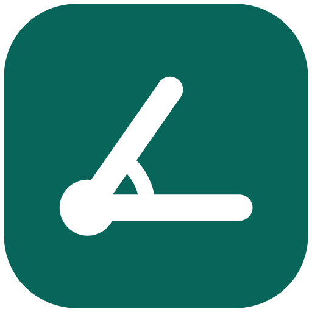

Gizlilik Politikası
Fizyo Defteri · Son güncelleme: 27 Kasım 2026
Fizyo Defteri, fizyoterapistlerin hasta dosyalarını, randevularını, seans notlarını, değerlendirmelerini, ev egzersiz programlarını ve ödemelerini tuttuğu bir klinik defter uygulamasıdır. Bu politika, uygulamayı kullandığınızda hangi verilerin işlendiğini, nerede saklandığını ve haklarınızı açıklar. Politika, 6698 sayılı Kişisel Verilerin Korunması Kanunu (KVKK) ve Avrupa Birliği Genel Veri Koruma Tüzüğü (GDPR) dikkate alınarak hazırlanmıştır.
1. Hasta ve klinik kayıtları yalnızca cihazınızda kalır
Uygulamada hesap, e-posta veya şifreyle giriş yoktur ve bir sunucumuz yoktur. Girdiğiniz tüm bilgiler — hasta adları ve iletişim bilgileri, tanılar, seans notları, ağrı skorları, değerlendirme ve test sonuçları, fotoğraflar, egzersiz programları, randevular, ödemeler ve onam imzaları — yalnızca kendi cihazınızda saklanır; bize, reklam sağlayıcılarına veya başka bir üçüncü tarafa gönderilmez.
- iOS: Veriler uygulamanın kendi klasöründe tutulur ve hasta verileri yurt dışındaki sunuculara aktarılmasın diye iCloud yedeğine dahil edilmez.
- Android: Veriler uygulamanın özel depolama alanında tutulur.
- Web sürümü: Veriler tarayıcınızın yerel depolamasında tutulur; web sürümünde reklam yoktur.
İsterseniz uygulamaya bir kilit kodu koyabilir, verilerinizi Yedek indir veya AES-256 ile şifrelenmiş Parolalı yedek olarak dışa aktarabilirsiniz. Yedek dosyalarının nereye kaydedileceğine ve kiminle paylaşılacağına siz karar verirsiniz. Rapor, randevu hatırlatması veya ev programı gibi içerikleri WhatsApp, e-posta ya da yazdırma ile paylaştığınızda bu içerik sizin seçtiğiniz uygulamaya ve kişiye gider.
Veri sorumlusu siz olursunuz: Hastalarınıza ait kişisel ve sağlık verilerini uygulamaya siz girdiğiniz için, KVKK kapsamında bu verilerin veri sorumlusu sizsiniz. Hastalarınızı aydınlatmak ve gerekli açık rızayı almak sizin sorumluluğunuzdadır; uygulamadaki onam formu bu konuda yardımcı olmak içindir.
2. Reklamlar (Android ve iOS uygulaması)
Telefon uygulaması ücretsizdir ve reklamlarla desteklenir. Reklamlar Google AdMob tarafından gösterilir. AdMob, reklam göstermek ve ölçmek için cihazınızdan şu verileri toplayabilir:
| Veri | Amaç |
|---|---|
| Reklam kimliği (Android reklam kimliği / IDFA) ve cihaz bilgileri | Reklam gösterimi, ölçüm, sahtekârlık önleme |
| IP adresinden çıkarılan yaklaşık konum | Bölgeye uygun reklam |
| Reklam etkileşimleri (gösterim, dokunma) | Reklam ölçümü ve analiz |
| Çökme ve performans verileri | Reklam altyapısının düzgün çalışması |
Hasta bilgileriniz ve klinik kayıtlarınız reklam sağlayıcısıyla hiçbir zaman paylaşılmaz. Hastayla birlikte kullanılan ekranlarda (birlikte egzersiz, onam imzası, ölçüm, klinik testler) reklam gösterilmez.
Avrupa Ekonomik Alanı, Birleşik Krallık ve gerekli diğer bölgelerde reklam verileri için Google'ın onay ekranı ile izniniz istenir; tercihinizi uygulamada Ayarlar → Premium ve reklamlar → Reklam gizlilik seçenekleri bölümünden değiştirebilirsiniz. iPhone'da Apple'ın “Uygulama İzleme Şeffaflığı” izni istenir; izin vermezseniz reklam kimliğiniz paylaşılmaz ve kişiselleştirilmemiş reklam gösterilir. Android'de reklam kimliğinizi Ayarlar → Gizlilik → Reklamlar bölümünden sıfırlayabilir veya silebilirsiniz.
Google'ın verileri nasıl kullandığı hakkında: Google iş ortağı siteleri ve uygulamaları.
3. Premium abonelik
Premium abonelik reklamları kaldırır. Satın alma ve ödeme işlemleri tamamen Google Play veya Apple App Store tarafından yürütülür; kart bilgileriniz bize ulaşmaz. Uygulama yalnızca aboneliğinizin etkin olup olmadığını ve hangi planda olduğunu mağazadan öğrenir ve bu bilgiyi cihazınızda saklar.
4. İzinler
- İnternet: Yalnızca reklamlar ve abonelik doğrulaması için kullanılır; hasta verileri internete gönderilmez.
- Kamera ve fotoğraflar: Yalnızca siz bir fotoğraf eklediğinizde (ör. postür veya açı ölçümü) kullanılır; fotoğraflar cihazınızda kalır.
- Titreşim: Zamanlayıcı ve uyarılar için kullanılır.
Bu izinleri vermeden de uygulamanın geri kalanını kullanabilirsiniz.
5. Verilerin paylaşımı
Kişisel verileriniz satılmaz veya kiralanmaz. Uygulama yalnızca reklam (Google AdMob) ve abonelik (Google Play, Apple App Store) için bu hizmet sağlayıcılarla, yukarıda açıklanan kapsamda veri paylaşır; yasal zorunluluk durumunda yetkili makamların talepleri saklıdır. Hasta ve klinik kayıtları bizim elimizde olmadığından kimseyle paylaşamayız.
6. Haklarınız ve veri silme
- Veri silme: Kayıtları uygulama içinden tek tek silebilir, uygulamayı silerek tüm verileri kaldırabilirsiniz. Web sürümünde tarayıcı verilerini temizlemek de kayıtları siler.
- Reklam verileri: Reklam kimliğinizi cihaz ayarlarından sıfırlayabilir veya kişiselleştirilmiş reklamları kapatabilirsiniz.
- KVKK'nın 11. maddesi ve GDPR kapsamındaki haklarınızla ilgili talepleriniz için aşağıdaki e-posta adresinden bize ulaşabilirsiniz.
7. Çocukların gizliliği
Uygulama sağlık meslek mensuplarına yöneliktir; 18 yaş altındaki kişilere yönelik değildir ve onlardan bilerek veri toplanmaz.
8. Değişiklikler
Bu politika güncellenebilir. Güncel sürüm her zaman bu sayfada yayınlanır ve üstteki tarih değiştirilir.
9. İletişim
Sorular ve talepler için: ugr_dundar@hotmail.com